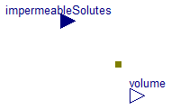
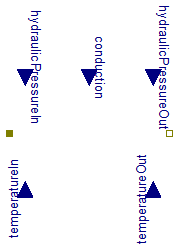
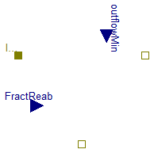

Extends from Modelica.Icons.Package (Icon for standard packages).
| Name | Description |
|---|---|
| Solvent container | |
| Solvent diffusion through semipermeable membrane | |
| Prescripted solvent flow | |
| Flow of whole solution | |
| Divide inflow to outflow and reabsorption |
 Physiolibrary.Osmotic.Components.OsmoticCell
Physiolibrary.Osmotic.Components.OsmoticCell
Solvent container

The liquid volume of the penetrating solution is accumulated in "OsmoticCell", where the nonpenetrating solutes are held. Instances of this class can represent both sides of the membrane, for example intracellular space, extracellular space, interstitial space, blood plasma or cerebrospinal fluid.
Extends from Icons.OsmoticCell, SteadyStates.Interfaces.SteadyState (Abstract class for any dynamic state calculation (for any derivation), which is driven by SimulationType option.).
| Type | Name | Default | Description |
|---|---|---|---|
| Integer | NumberOfMembraneTypes | 1 | Membrane type is determined by membrane permeabilities for substances. |
| AmountOfSubstance | ImpermeableSolutes[NumberOfMembraneTypes] | zeros(NumberOfMembraneTypes) | Amount of impermeable substance if useImpermeableSolutesInput=false [mol] |
| Initialization | |||
| Volume | volume_start | 0.001 | Initial volume of compartment [m3] |
| External inputs/outputs | |||
| Boolean | useImpermeableSolutesInput | false | =true, if impermeable substance amount as an input |
| IO | |||
| Functions to read or store | |||
| replaceable package Utilities | Types.FilesUtilities (direct... | ||
| Initialization | |||
| Real | state_start | volume_start | State start or init value |
| Value I/O | |||
| String | storeUnit | "mOsm/l" | Unit in Utilities input/output function |
| String | stateName | getInstanceName() | Name in Utilities input/output function |
| Boolean | LOAD_STARTS | false | Load start value of state |
| Boolean | SAVE_RESULTS | false | Save final state values |
| Boolean | SAVE_COMPARISON | false | Compare final state values with original values |
| Equilibrium | |||
| Simulation | |||
| SimulationType | Simulation | Types.SimulationType.NormalI... | Dynamic with Initialization or Steady State |
| Boolean | isDependent | false | =true, If zero flow is propagated in eqiulibrium through resistors, impedances, reactions, etc. |
| Type | Name | Description |
|---|---|---|
| OsmoticPort_a | q_in[NumberOfMembraneTypes] | Flux to/from osmotic compartment |
| input AmountOfSubstanceInput | impermeableSolutes[NumberOfMembraneTypes] | Amount of impermeable solutes in compartment [mol] |
| output VolumeOutput | volume | Actual volume of compartment [m3] |
2009-2010
Marek Matejak, Charles University, Prague, Czech Republic
 Physiolibrary.Osmotic.Components.Membrane
Physiolibrary.Osmotic.Components.Membrane
Solvent diffusion through semipermeable membrane

The main element of osmotic phenomena is a semipermeable membrane, which generates the flow of penetrating substances together with water. The connector on both sides is composed of molar concentration of non-penetrating solutes (osmolarity), and from penetrating volumetric flow (osmotic flux). Flow through the membrane depends on a pressure gradient, where pressure on both sides is calculated from the osmotic and hydraulic component.
Extends from Interfaces.OnePort (Osmotic one port), Icons.Membrane.
| Type | Name | Default | Description |
|---|---|---|---|
| OsmoticPermeability | cond | 1e-15 | Membrane permeability for solvent if useConductanceInput = false [m3/(Pa.s)] |
| Pressure | HydraulicPressureIn | 0 | Hydraulic pressure inside if useHydraulicPressureInputs=false [Pa] |
| Pressure | HydraulicPressureOut | 0 | Hydraulic pressure outside if useHydraulicPressureInputs=false [Pa] |
| Temperature | T | 310.15 | Temperature on both membrane sides if useTemperatureInputs=false [K] |
| External inputs/outputs | |||
| Boolean | useConductanceInput | false | =true, if membrane permeability input is used |
| Boolean | useHydraulicPressureInputs | false | =true, if hydraulic pressure inputs is used |
| Boolean | useTemperatureInputs | false | =true, if temperature on both sides is used |
| Type | Name | Description |
|---|---|---|
| OsmoticPort_a | q_in | Forward flux through membrane |
| OsmoticPort_b | q_out | Backward flux through membrane |
| input PressureInput | hydraulicPressureIn | [Pa] |
| input PressureInput | hydraulicPressureOut | [Pa] |
| input TemperatureInput | temperatureIn | [K] |
| input TemperatureInput | temperatureOut | [K] |
| input OsmoticPermeabilityInput | conduction | [m3/(Pa.s)] |
2009-2014
Marek Matejak, Charles University, Prague, Czech Republic
 Physiolibrary.Osmotic.Components.SolventFlux
Physiolibrary.Osmotic.Components.SolventFlux
Prescripted solvent flow
Extends from Interfaces.OnePort (Osmotic one port), Chemical.Interfaces.ConditionalSolutionFlow (Input of solution volumetric flow vs. parametric solution volumetric flow).
| Type | Name | Default | Description |
|---|---|---|---|
| VolumeFlowRate | SolutionFlow | 0 | Volumetric flow of solution if useSolutionFlowInput=false [m3/s] |
| External inputs/outputs | |||
| Boolean | useSolutionFlowInput | false | =true, if solution flow input is used instead of parameter SolutionFlow |
| Type | Name | Description |
|---|---|---|
| OsmoticPort_a | q_in | Forward flux through membrane |
| OsmoticPort_b | q_out | Backward flux through membrane |
| input VolumeFlowRateInput | solutionFlow | [m3/s] |
2009-2010
Marek Matejak, Charles University, Prague, Czech Republic
 Physiolibrary.Osmotic.Components.IdealFlowFiltration
Physiolibrary.Osmotic.Components.IdealFlowFiltration
Flow of whole solution

Possible field values:
forward flow |
backward flow |
|
solutionFlow |
>=0 |
<=0 |
q_in.q |
=solutionFlow*q_in.conc |
=-q_out.q |
q_out.q |
=-q_in.q |
=solutionFlow*q_out.conc |
Extends from Icons.FlowFiltration, Chemical.Interfaces.ConditionalSolutionFlow (Input of solution volumetric flow vs. parametric solution volumetric flow).
| Type | Name | Default | Description |
|---|---|---|---|
| VolumeFlowRate | SolutionFlow | 0 | Volumetric flow of solution if useSolutionFlowInput=false [m3/s] |
| External inputs/outputs | |||
| Boolean | useSolutionFlowInput | false | =true, if solution flow input is used instead of parameter SolutionFlow |
| Type | Name | Description |
|---|---|---|
| input VolumeFlowRateInput | solutionFlow | [m3/s] |
| OsmoticPort_a | port_a | Inflow ospomarity and positive filtrate flow rate |
| OsmoticPort_b | filtrate | Outflow osmolarity and negative filtrate flow rate |
| Author: | Marek Matejak |
| Copyright: | In public domains |
| By: | Charles University, Prague |
| Date of: | 2009 |
 Physiolibrary.Osmotic.Components.Reabsorption
Physiolibrary.Osmotic.Components.Reabsorption
Divide inflow to outflow and reabsorption

If useOutflowMin=false then the next schema is used.
/Dymola%202014%20FD01/Modelica/Library/Physiolibrary/Resources/Images/UserGuide/HydraulicReabsorption.png)
If useOutflowMin=true then the extended schema is used:
/Dymola%202014%20FD01/Modelica/Library/Physiolibrary/Resources/Images/UserGuide/HydraulicReabsorptionWithOutflowMin.png)
Extends from Icons.Reabsorption.
| Type | Name | Default | Description |
|---|---|---|---|
| VolumeFlowRate | OutflowMin | 0 | Minimal outflow if useExternalOutflowMin=false [m3/s] |
| External inputs/outputs | |||
| Boolean | useExternalOutflowMin | false | =true, if minimal outflow is garanted |
| Type | Name | Description |
|---|---|---|
| OsmoticPort_a | Inflow | |
| OsmoticPort_b | Outflow | |
| OsmoticPort_b | Reabsorption | |
| input FractionInput | FractReab | [1] |
| input VolumeFlowRateInput | outflowMin | [m3/s] |
2009-2010
Marek Matejak, Charles University, Prague, Czech Republic